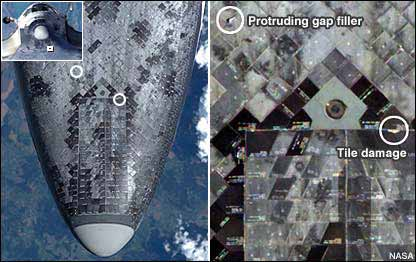
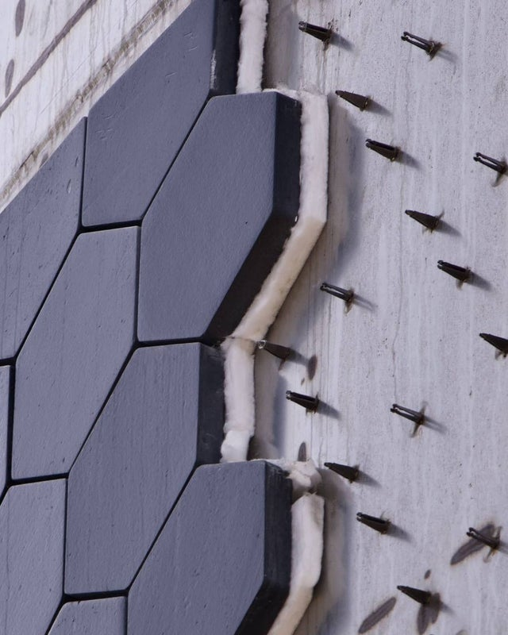

ENG0018 Computer Laboratory 2026/27
Student URN: 6980185
Conference Paper: The Reusability Paradox: Why Surviving Hypersonic Flight Is Not Enough
1. Abstract
Hypersonic flight represents a major leap forward for aerospace, offering unprecedented speeds that could transform global travel, logistics, and access to space. However, the engineering required to sustain these speeds remains out of reach for most nations, and the few leading the field closely guard their breakthroughs. At the centre of this race is a fundamental engineering paradox: how do you build a vehicle that can survive superheated gas at temperatures approaching 3,000 °C and fly again almost immediately?
This paper uses a literature-based comparative analysis to examine how emerging hypersonic technologies apply to next-generation reusable spacecraft, including SpaceX Starship, Sierra Space Dream Chaser, and future advanced wingless "lifting-body" designs. It argues that simply surviving the extreme heat of re-entry is no longer enough to make spaceflight practical, because a vehicle must also be quick to inspect and repair. Solving this reusability paradox appears realistic within the coming decades with the advancement of technology, but achieving rapid, airline-style turnaround will require major breakthroughs in heat-resistant materials and maintenance logistics.
2. Introduction & Background
2.1 Defining the Reusability Paradox
The Space Race accelerated advances in spacecraft technology but relied heavily on expendable systems. During the Apollo 4 mission, the capsule returned from lunar-return velocity protected by an ablative heat shield that was intentionally consumed during re-entry (Manned Spacecraft Center, 1968). While this approach provided excellent thermal protection, replacing major components after every flight is unsuitable for routine commercial space operations (Heppenheimer, 1999).
NASA's Space Shuttle introduced reusable thermal protection using silica tiles and reinforced carbon-carbon (RCC) panels. However, these systems still required extensive inspection and repair between flights (Curry, 1993; Heppenheimer, 1999). Launch footage showed insulating foam breaking away from the external tank and striking the orbiter's left wing (Figure 1; Columbia Accident Investigation Board, 2003, p. 34). The Columbia accident demonstrated the risks involved when damage to an RCC panel allowed superheated gases to penetrate the wing during re-entry, ultimately leading to vehicle loss (Columbia Accident Investigation Board, 2003).

Figure 2 shows the RCC panels used to protect the Shuttle's most thermally demanding regions (NASA Kennedy Space Center, 2004). The lesson from Columbia is clear: surviving hypersonic conditions is only part of the challenge. A spacecraft must also be inspected, repaired and certified for flight quickly enough to make reuse economically practical. This conflict forms the reusability paradox.

2.2 Why Hypersonic Flight Is So Hot
Hypersonic flight generally refers to speeds above Mach 5 (NASA Glenn Research Center, no date). At these velocities, air is compressed into a powerful shock wave ahead of the vehicle. This compression generates extreme temperatures, meaning most heating comes from compressed air rather than surface friction (Tauber, 1989; Sutton and Graves, 1971).
The stagnation-temperature equation below illustrates how temperature rises with increasing Mach number (Ames Research Staff, 1953; Hayes and Probstein, 1959):
For atmospheric air at approximately 217 K, Mach 5 produces a stagnation temperature of around 1,300 K, while Mach 10 exceeds 4,500 K. Figure 5 demonstrates this relationship. The curve rises sharply because temperature increases with the square of Mach number, meaning relatively small increases in velocity create substantially larger thermal loads.
Although real vehicles experience somewhat lower temperatures because energy is consumed through molecular dissociation and ionisation (Hayes and Probstein, 1959), the trend remains the same. Increasing speed rapidly increases thermal stress, making advanced thermal protection systems essential for reusable hypersonic flight.
2.3 Scope of Paper
This paper investigates whether spacecraft can achieve rapid reuse while operating in extreme thermal environments. It compares historical and modern thermal protection technologies, examines inspection and maintenance requirements, and evaluates examples including the Space Shuttle, SpaceX Starship and Dream Chaser. The central argument is that successful reusability depends as much on maintenance and turnaround efficiency as on thermal resistance.
3. Analysis and Discussion
3.1 Thermal Protection System (TPS) Trade-offs
Thermal protection systems prevent spacecraft structures from reaching temperatures that would cause failure during atmospheric entry. Every TPS design involves trade-offs between temperature capability, durability, mass and maintenance requirements (Stackpoole, 2022).
Apollo's ablative shield provided excellent protection but could not be reused (Manned Spacecraft Center, 1968). The Space Shuttle introduced reusable silica tiles and RCC panels but required extensive maintenance (Curry, 1993). Newer technologies such as TUFROC (NASA Ames Research Center, 2019) and ultra-high-temperature ceramics (Fahrenholtz and Hilmas, 2017) seek to improve durability while maintaining resistance to extreme heat.
Figure 5 and Figure 6 help explain these challenges. As Mach number increases, thermal loading rises rapidly, and the ideal stagnation temperature passes the reusable limits of both Shuttle RCC and TUFROC at roughly Mach 6. Materials that perform adequately at lower hypersonic speeds may therefore be insufficient at higher velocities. Although modern materials can survive greater temperatures, many remain expensive, difficult to manufacture or relatively unproven (Ni et al., 2022). Consequently, no current TPS completely resolves the balance between thermal performance and rapid reuse.
3.2 Turnaround Time vs. Inspection and Damage
Thermal survival alone does not guarantee economical reusability. Following each mission, heat-shield systems must be inspected for cracks, impact damage and material degradation. NASA studies estimated that Shuttle thermal protection maintenance required nearly 32,000 labour hours per mission (Scotti, Clay and Rezin, 2003), making rapid turnaround impractical. Inspection imagery of Discovery in 2005 revealed damaged tiles and protruding gap filler on its underside, and an astronaut had to remove the filler during a spacewalk (Figure 3; CBBC Newsround, 2005). Figure 7 shows where this effort sits in the re-entry-to-relaunch cycle.

Following the Columbia accident, NASA expanded the use of non-destructive evaluation methods such as infrared thermography to identify hidden damage within RCC panels (NASA Langley Research Center, no date). Modern vehicles face similar challenges. Starship relies on thousands of ceramic tiles that must be evaluated after flight (Tech Times, 2026; Lapointe, 2026). Figure 4 shows the hexagonal tile layout and the pins and layer beneath the tiles (Space Exploration Stack Exchange, no date). Proposed metallic hot structures aim to reduce inspection requirements. The evidence suggests that maintenance demands, rather than maximum temperature capability, remain the greatest obstacle to airline-style operations.

Table 1: Comparison of Reusable Re-entry and Hypersonic Heat-Shield Approaches
| Vehicle / System | Primary TPS Material | Temperature Capability | Turnaround Bottleneck |
|---|---|---|---|
| Space Shuttle Orbiter | Silica tiles and blankets; RCC on nose and wing leading edges (Curry, 1993) | Up to about 1,650 °C (3,000 °F) on the hottest surfaces (NASA Kennedy Space Center, 2004) | Inspecting and waterproofing thousands of tiles; about 32,000 maintenance hours per mission (Scotti, Clay and Rezin, 2003) |
| SpaceX Starship | About 18,000 hexagonal ceramic tiles over a stainless-steel hull (Tech Times, 2026) | Not confirmed in public sources | Tile inspection and hot gas leaking through gaps; first tile reuse in 2026 (Lapointe, 2026) |
| Dream Chaser | TUFROC (carbon-based cap on silica insulating base), licensed from NASA (NASA Ames Research Center, 2019) | Reusable to about 1,600 °C (2,900 °F) (NASA Ames Research Center, 2019) | Little public turnaround data |
| Future hypersonic glide vehicles (concept) | Ultra-high temperature ceramics (UHTCs) | Highest known melting points; usable limits still being tested (Fahrenholtz and Hilmas, 2017) | Brittleness and difficult manufacture (Ni et al., 2022) |
4. Data Visualisations
Figure 5 presents the predicted stagnation temperature for vehicles travelling between Mach 1 and Mach 25. The graph demonstrates the non-linear increase in thermal loading with speed and highlights why thermal protection becomes increasingly difficult at higher Mach numbers. This trend directly supports the material trade-offs discussed in Section 3.1.
Figure 5: Mach Number vs. Ideal-Gas Stagnation Temperature
Calculated with the equation in Section 2.2, assuming air at 216.65 K and γ = 1.4 (Ames Research Staff, 1953). Real values at high Mach numbers are lower because energy goes into splitting air molecules (Hayes and Probstein, 1959).
Figure 6 zooms in on the low-hypersonic range and overlays the maximum temperatures quoted for reusable heat shields. The ideal stagnation temperature crosses both limits at roughly Mach 6, which is only just above the Mach 5 threshold at which hypersonic flight begins (NASA Glenn Research Center, no date).
Figure 6: Ideal Stagnation Temperature Compared with Reusable TPS Limits
Stagnation temperature calculated as in Figure 5. Horizontal lines show about 1,650 °C for Shuttle RCC (NASA Kennedy Space Center, 2004) and about 1,600 °C for TUFROC (NASA Ames Research Center, 2019), converted to kelvin. This is a simplified comparison: the ideal-gas curve over-predicts real temperatures (Hayes and Probstein, 1959), and a vehicle surface is cooler than the stagnation temperature of the air.
Figure 7 summarises the reusability paradox as a cycle. Thermal survival only covers the re-entry stage; the inspection, repair and certification stages are where the Shuttle accumulated its maintenance burden (Scotti, Clay and Rezin, 2003).
Figure 7: The Reusability Cycle and Its Turnaround Bottleneck
Conceptual diagram by the author. The 32,000-hour figure is from Scotti, Clay and Rezin (2003).
5. Conclusion
This paper has argued that the principal challenge facing reusable hypersonic spacecraft is no longer simply surviving extreme temperatures but achieving rapid and reliable turnaround between missions. Historical systems such as Apollo relied on ablative heat shields that could not be reused (Manned Spacecraft Center, 1968), while the Space Shuttle demonstrated that reusability was technically achievable but operationally expensive due to extensive inspection and repair requirements (Scotti, Clay and Rezin, 2003).
The comparison of thermal protection technologies shows that newer solutions such as TUFROC and ultra-high-temperature ceramics provide improved thermal capability (NASA Ames Research Center, 2019; Fahrenholtz and Hilmas, 2017), yet Figure 5 and Figure 6 demonstrate that heating increases rapidly with Mach number. As a result, increasing thermal resistance alone is unlikely to deliver airline-style operations.
Future progress will depend on advances in inspection automation, non-destructive evaluation techniques (NASA Langley Research Center, no date) and damage-tolerant structures alongside material development. Airline-like turnaround may become achievable within the coming decades, but only if spacecraft can be assessed and returned to service with maintenance requirements comparable to those of modern aircraft. The reusability paradox therefore remains one of the most significant engineering challenges in future hypersonic and space transportation systems.
6. References
- Ames Research Staff (1953) Equations, tables, and charts for compressible flow. NACA Report 1135. Washington, DC: National Advisory Committee for Aeronautics.
- CBBC Newsround (2005) 'Discovery is fixed by astronaut', CBBC Newsround, 3 August. Available at: http://news.bbc.co.uk/cbbcnews/hi/newsid_4740000/newsid_4741600/4741641.stm (Accessed: [insert date]).
- Columbia Accident Investigation Board (2003) Report Volume I. Washington, DC: National Aeronautics and Space Administration and the Government Printing Office.
- Curry, D.M. (1993) Space Shuttle Orbiter thermal protection system design and flight experience. NASA Technical Memorandum 104773. Houston, TX: NASA Lyndon B. Johnson Space Center.
- Fahrenholtz, W.G. and Hilmas, G.E. (2017) 'Ultra-high temperature ceramics: Materials for extreme environments', Scripta Materialia, 129, pp. 94–99.
- Hayes, W.D. and Probstein, R.F. (1959) Hypersonic flow theory. New York: Academic Press.
- Heppenheimer, T.A. (1999) The Space Shuttle decision: NASA's search for a reusable space vehicle. NASA SP-4221. Washington, DC: NASA History Office.
- Lapointe, E. (2026) 'Starship is about to attempt something it's never done in 13 flights', Gizmodo, 24 September. Available at: https://gizmodo.com/starship-is-about-to-attempt-something-its-never-done-in-13-flights-2000816743 (Accessed: [insert date]).
- Manned Spacecraft Center (1968) Apollo 4 mission report. MSC-PA-R-68-1. Houston, TX: NASA Manned Spacecraft Center.
- NASA (2003) Columbia Debris, NASA Image KSC-03pd2767. Kennedy Space Center, FL: NASA. Available at: https://images.nasa.gov/details/KSC-03pd2767 (Accessed: [insert date]).
- NASA Ames Research Center (2019) TUFROC thermal protection system. NASA Technical Reports Server, ID 20190030273. Moffett Field, CA: NASA.
- NASA Glenn Research Center (no date) Beginner's guide to hypersonics. Available at: https://www.grc.nasa.gov/www/BGH/ (Accessed: [insert date]).
- NASA Kennedy Space Center (2004) Reinforced carbon-carbon (RCC) panels. Fact Sheet FS-2004-01-001-KSC. Kennedy Space Center, FL: NASA.
- NASA Langley Research Center (no date) Infrared thermography. Available at: https://www.nasa.gov/langley/nesb/infrared-thermography-nesb (Accessed: [insert date]).
- Ni, D. et al. (2022) 'Advances in ultra-high temperature ceramics, composites, and coatings', Journal of Advanced Ceramics, 11(1), pp. 1–56.
- Scotti, S.J., Clay, C. and Rezin, M. (2003) 'Structures and materials technologies for extreme environments applied to reusable launch vehicles', AIAA/ICAS International Symposium and Exposition, Dayton, OH, 14–17 July. Reston, VA: AIAA, Paper 2003-2697.
- Space Exploration Stack Exchange (no date) 'How many different hexagonal tiles/modules are required to pave one Starship?', question 50672. Available at: https://space.stackexchange.com/questions/50672/how-many-different-hexagonal-tiles-modules-are-required-to-pave-one-starship (Accessed: [insert date]).
- Stackpoole, M. (2022) 'Thermal protection materials and systems at NASA Ames Research Center', 2nd International Conference on Flight Vehicles, Aerothermodynamics and Re-entry Missions & Engineering (FAR), Heilbronn, Germany, 19–23 June.
- Sutton, K. and Graves, R.A. (1971) A general stagnation-point convective-heating equation for arbitrary gas mixtures. NASA Technical Report NASA-TR-R-376. Washington, DC: NASA.
- Tauber, M.E. (1989) A review of high-speed, convective, heat-transfer computation methods. NASA Technical Paper 2914. Moffett Field, CA: NASA Ames Research Center.
- Tech Times (2026) 'Starship heat shield tiles are dead end for rapid reuse, former NASA experts warn', Tech Times, 29 July. Available at: https://www.techtimes.com/articles/322079/20260729/starship-heat-shield-tiles-are-dead-end-rapid-reuse-former-nasa-experts-warn.htm (Accessed: [insert date]).